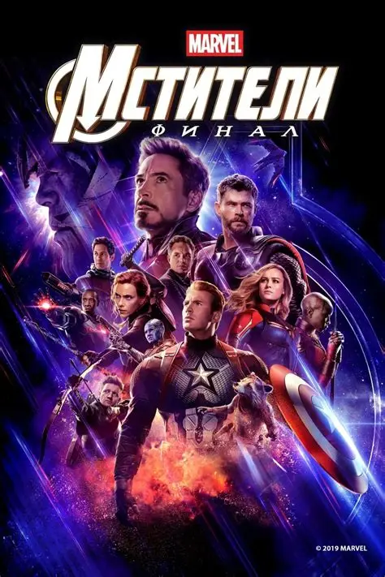

Avengers: Endgame, Anthony and Joe Russo

«Мстители: Финал» — американский супергеройский фильм братьев Энтони и Джо Руссо, вышедший в прокат в апреле 2019 года. Это продолжение фильма «Мстители: Война бесконечности» и завершение большой истории киновселенной Marvel.
После того как Танос уничтожил половину всех живых существ во Вселенной, выжившие Мстители решаются на последнюю попытку всё исправить: они отправляются в прошлое, чтобы собрать Камни бесконечности.
Интересные факты
Фильм снимали одновременно с «Войной бесконечности», почти без перерыва между двумя картинами.
Хронометраж фильма — 3 часа 1 минута, это один из самых длинных фильмов Marvel.
До 2021 года «Мстители: Финал» был самым кассовым фильмом в истории, пока «Аватар» не вернул первое место после повторного проката.